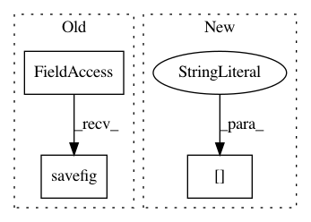

eefb7289f964533499cb31c0fc0ca37a2d2cc142,scanpy/tools/drawg.py,,plot,#Any#Any#Any#Any#Any#Any#Any#,79
Before Change
_plot(Y, ddata, params, istep)
if sett.autoshow:
sett.mt(0, "finished plotting")
pl.savefig(sett.figdir+ddrawg["writekey"]
+"_step{:02}".format(istep)+"."+sett.extf)
// save state of Y to outfile
ddrawg["Y"] = Y
ddrawg["istep"] = istep
sc.write(ddrawg["writekey"], ddrawg)
After Change
// compute the next steps
istep_init = istep + 1
add_steps = params["add_steps"]
del params["add_steps"]
for istep in istep_init + np.arange(add_steps, dtype=int):
sett.mt(0, "compute Fruchterman-Reingold layout: step", istep)
Y = fruchterman_reingold_layout(Adj, Yinit=Y, iterations=step_size)
sett.mt(0, "finished computation")
In pattern: SUPERPATTERN
Frequency: 3
Non-data size: 3
Instances
Project Name: theislab/scanpy
Commit Name: eefb7289f964533499cb31c0fc0ca37a2d2cc142
Time: 2017-02-06
Author: f.alex.wolf@gmx.de
File Name: scanpy/tools/drawg.py
Class Name:
Method Name: plot
Project Name: theislab/scanpy
Commit Name: 475d6d680d628f6cf6c669fb458b063c313512dd
Time: 2017-01-31
Author: f.alex.wolf@gmx.de
File Name: scanpy/tools/dpt.py
Class Name:
Method Name: plot
Project Name: matplotlib/matplotlib
Commit Name: 048cafd2c17219d0e47d90aa073f90d516902a02
Time: 2017-05-30
Author: dstansby@gmail.com
File Name: examples/text_labels_and_annotations/tex_demo.py
Class Name:
Method Name: